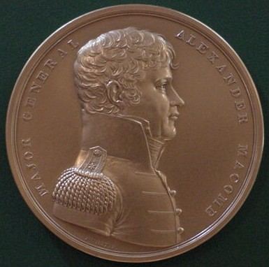

HISTORY: Alexander Macomb served as the Army's Adjutant General in 1812, and later as General in Chief of the Army from 1828 until his death in 1841. He was one of the first officers to receive formal military training at West Point. Maj. Gen. Macomb was a Soldier/ Scholar/General throughout his life publishing books and articles and becoming well known in his day for community involvement. He espoused the position that the commanding general should have active command of the whole Army including the staff bureaus, under loose supervision of the secretary of war; the increase of enlisted pay to discourage desertion; the augmentation of officers in the service branches to free line officers for field duty; relief for widows and orphans of regular officer victims of wounds and disease; and a system of officer retirement and replacement.
PURPOSE/CRITERIA: The Alexander Macomb Award is a Commandant's Award given to deserving individuals/units/agencies whose contributions to the AG Corps are in keeping with the spirit of Maj. Gen. Macomb's service to community.
COST: $40.00, to be borne by the recommending authority
RECOMMENDING PROCEDURES: Any individual having firsthand knowledge of an individual's achievement and/or service to the AG Corps can recommend that individual/unit/agency for this award. Recommendations will be forwarded to the AG Corps Regimental Association, ATTN: VP Awards, PO Box 10026, Fort Jackson, SC 29207-0026.
EFFECTIVE DATE: 1 November 2002